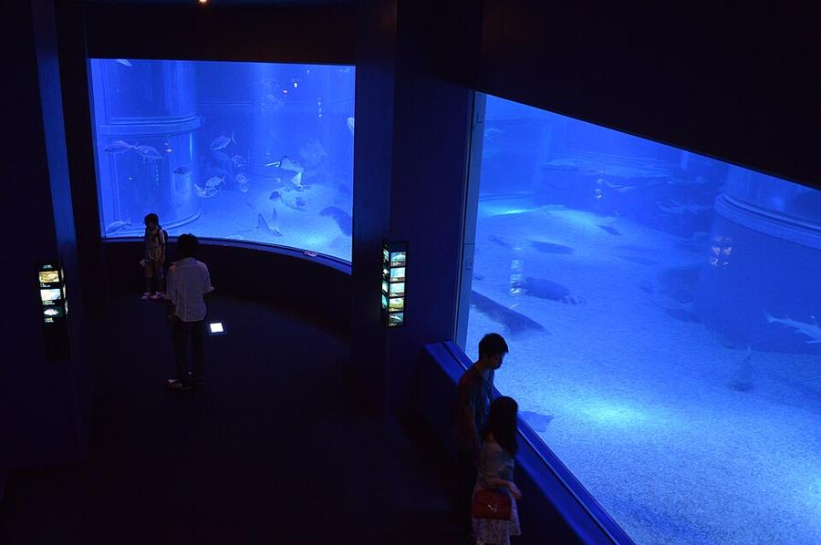
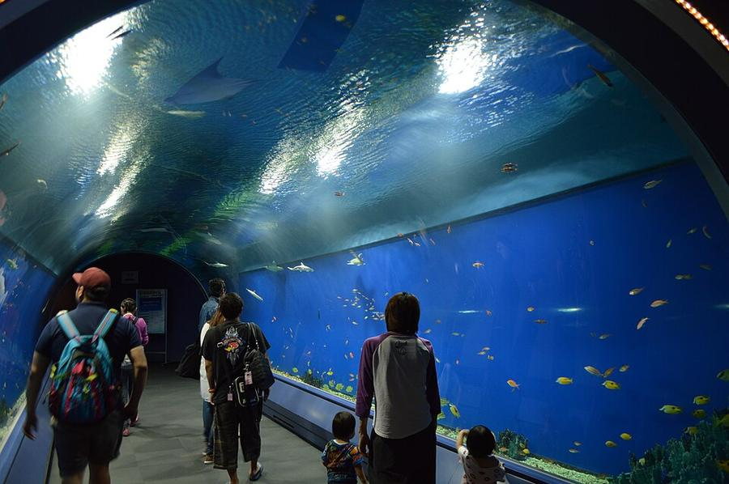
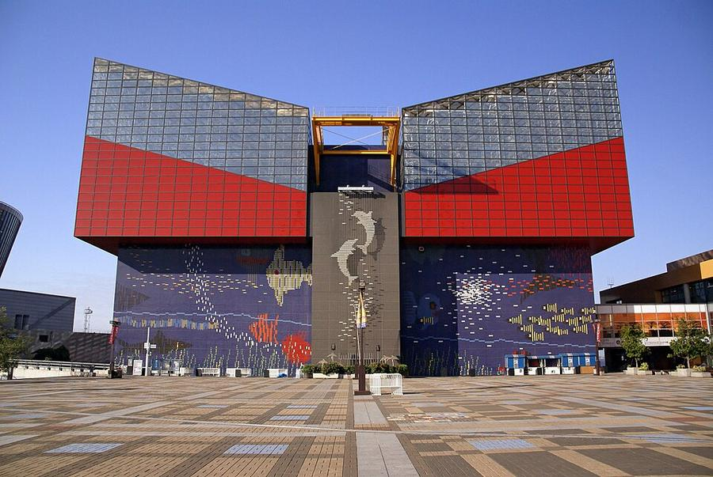
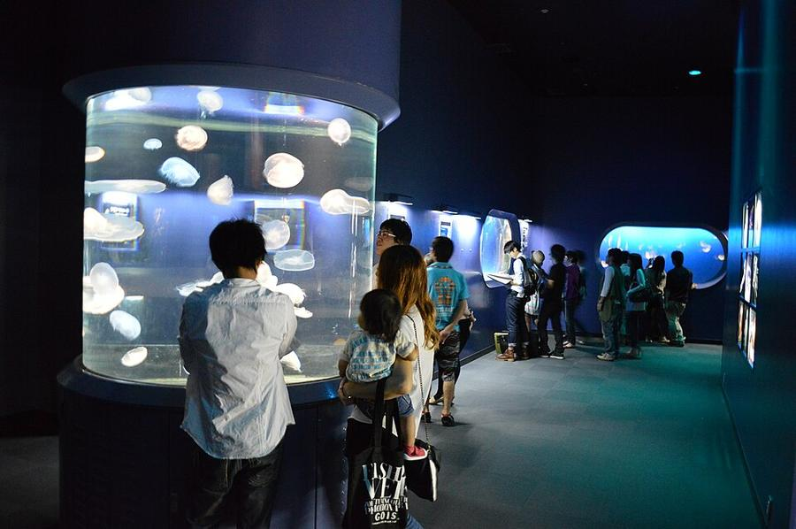
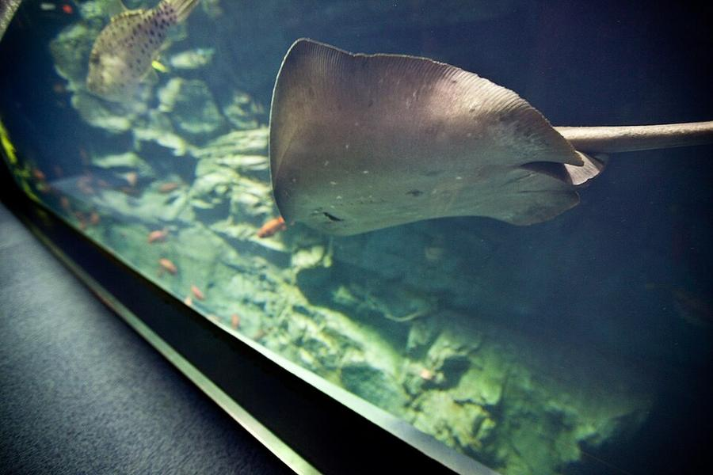
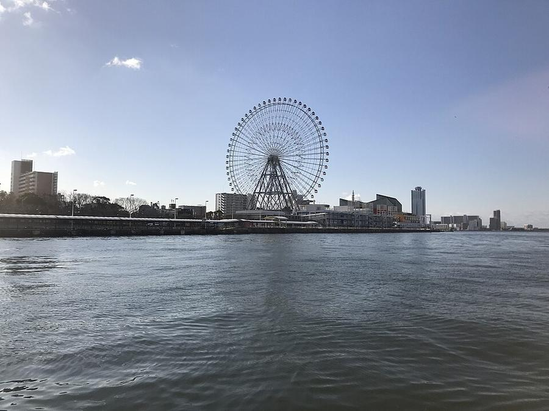
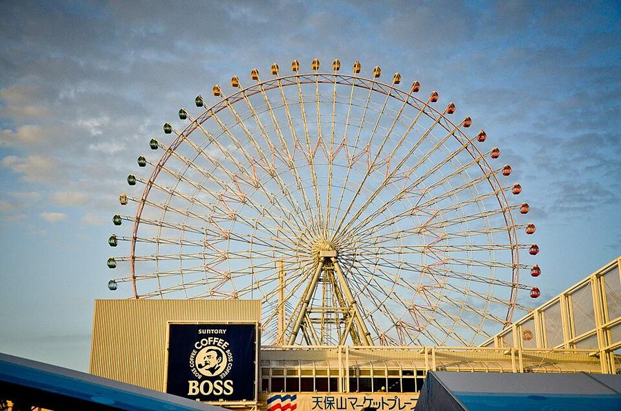
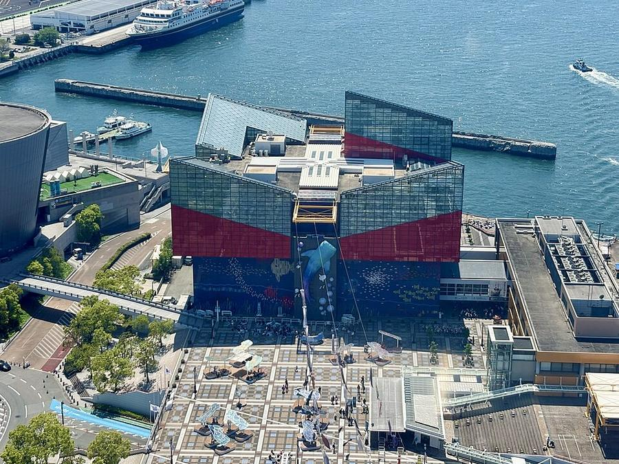

12Аквариум Kaiyukan








Kaiyukan открылся в 1990 году и тогда был самым большим общедоступным аквариумом в мире. Экспозиция построена как путешествие по Тихому океану: огромные аквариумы во всю стену, тоннель под водой, медузы, скаты (на фото).
Стоит на берегу Осакского залива в районе Tempozan. Рядом колесо обозрения Tempozan высотой 112,5 м (1997) и набережная - закат у воды 25.10 в 17:11. Под крышей - хороший вариант на дождь.
| Часы | 25.10 (вс) 9:30-20:00, 26.10 (пн) 10:30-20:00; вход до 19:00 |
|---|---|
| Вход | 2 800 ¥ (цена меняется по дням, на 25 и 26.10 одинаковая) |
| Выходные | по графику на сайте, 25-26.10 открыто |
| Наши даты | открыто оба дня |
| На месте | 1,5-2 ч |
| Дождь | 🏠 под крышей, в дождь - да |
Источник часов и цен: kaiyukan.com (офиц. календарь часов и цен, проверено 25.10)
Как добраться от отеля
- Из отеля 5 мин до Umeda, красная Midosuji (платформа 1) 2 остановки до Hommachi, пересадка на зелёную Chuo line (платформа 2, на Cosmosquare / Yumeshima): Awaza → Kujo → Bentencho → Asashiobashi → Osakako. ~25 мин, выход 1, 5 мин пешком на колесо обозрения.
- От замка (Tanimachi 4-chome) - та же зелёная Chuo line без пересадок, 7 остановок, 15 мин.
Рядом


Фото: Wikimedia Commons, автор и лицензия под каждым. Поезда: Yahoo!乗換案内 на 24-26.10.2026, пешие отрезки: OSRM. Часы и цены проверены 25.10.2026 12:49 JST. ← ко всем местам